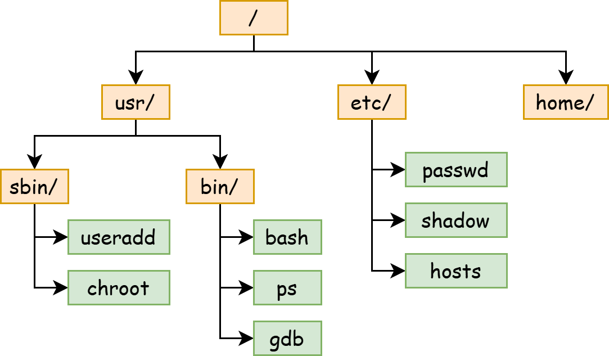
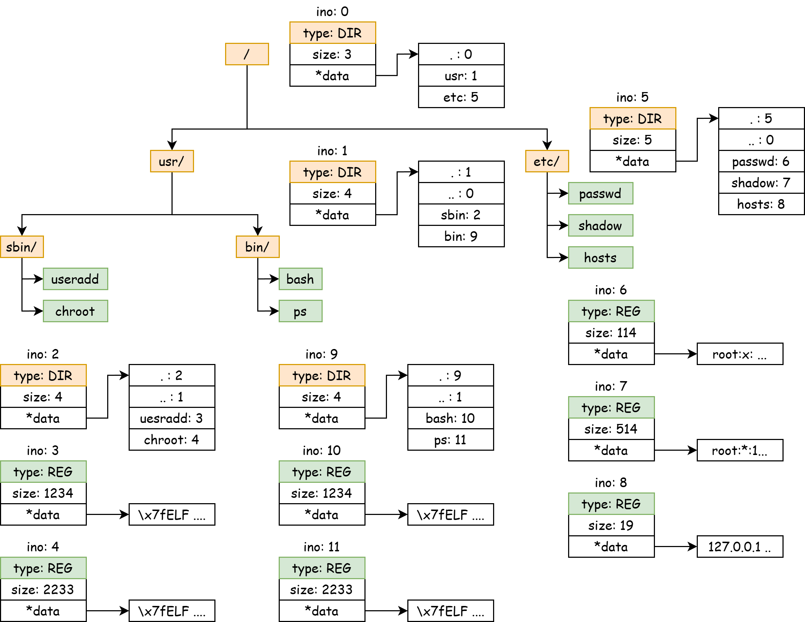
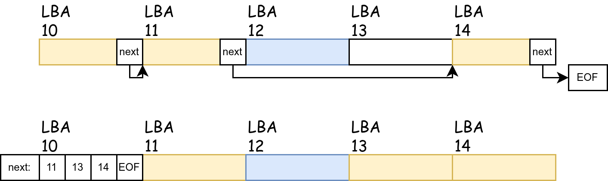

File System 1¶
实验目的¶
- 理解 IO 的两种访问方式 Explicit I/O instructions 和 Memory-mapped I/O
- 掌握 Character Device 和 Block Device 的区别
- 理解 file system 的设计思路
I/O¶
什么是 I/O 设备？ I/O 设备就是一堆寄存器。IO 设备通过寄存器完成与 CPU 的数据交换，然后根据寄存器中的要求完成任务。
CPU 怎么访问 I/O 设备的寄存器：I/O指令，或 Memory-Mapped Register。
Recall 计组
我们可以先回顾一下，在计算机组成原理课的 Project 上，我们要使用 RISC-V 指令点亮一个 FPGA 板子上的一个灯泡。
而 “FPGA 板子上的灯泡” 是通过 FPGA 芯片上的引脚连接到电路板上的 LED 灯。我们在 FPGA 上编程时，需要使用 reg led[0:7] 创建一些 Registers 并用它驱动 FPGA 芯片的引脚。
而我们的 CPU 是怎么访问这些寄存器的？计组课可能会教两种方法：创建一种新的指令，专门用它来操作 LED 灯；将 LED 灯这些寄存器映射到 Address Space 上，通过普通的访存指令访问它们。
Character Device¶
Character Device 指以字节为单位进行数据访问的 IO 设备。
在 QEMU 平台和 VisionFive2 上，串口就是一种 Character Device ，它所使用的设备模型是 uart8250。它的 MMIO 接口暴露了 8 个寄存器。具体的细节可见：https://www.lammertbies.nl/comm/info/serial-uart
uart8250 具有一个读口和一个写口，分别是 RHR 和 THR，它们都是8-bits的寄存器。在寄存器 LSR 中，各有一个 bit 表示读口有数据 (Bit 0, Data available) 和写口空闲（Bit 5, THR is empty）。
我们通过 Memory-mapped 地址访问设备的寄存器：
#define Reg(reg) ((volatile unsigned char *)(KERNEL_UART0_BASE + (reg)))
static void set_reg(uint32 reg, uint32 val) {
writeb(val, Reg(reg));
}
static uint32 read_reg(uint32 reg) {
return readb(Reg(reg));
}
对于写入，我们使用 轮询 Polling ，只要 LSR.THR 提示 THR 空闲，我们就向 THR 中写入一个字符。
对于读取，我们使用 中断 Interrupts，每当 I/O 设备填充完毕 RHR 后，它会发起一个中断，这个中断将由 PLIC 处理并分发到某个核心上，我们在中断处理函数中读取该字节。
void uart_intr() {
while (1) {
int c = uartgetc();
if (c == -1)
break;
// infof("uart: %c", c);
consintr(c);
}
}
Block Device¶
对应 Character Device 以字节为单位进行访问，块设备的访问是以一个块为单位的，块大小一般为 2的整数幂，如 512B 或 4KiB，我们称这种设备为 Block Device。 我们所使用的硬盘，包括固态硬盘和机械硬盘，都是块设备。
每个块拥有一个唯一的编号，称为 Logical block addressing (LBA)。第一个块为 LBA 0，第二个块为 LBA 1，以此类推。
在 QEMU 上，块设备一般由 VirtIO Block-Device 提供。
VirtIO 是一种在虚拟化平台上非常常用的设备模型。它也定义了一堆寄存器接口，并通过 Memory-mapped register 进行访问。
virtio
VirtIO 代码位于 fs/virtio.c，你可以参照 VirtIO 手册了解具体的细节。
https://docs.oasis-open.org/virtio/virtio/v1.3/csd01/virtio-v1.3-csd01.pdf
File System¶
文件系统是什么样的？¶
文件系统是一个树状结构。每个节点（统称为 文件 ）要么是一个目录（directory）要么是一个普通文件（regular file）。树根称为 根目录，文件的路径名是从根目录到某个文件的路径上所有文件名的 concat。

每个文件拥有一个全局唯一的id，我们称之为 inode number (ino)。每个文件包含一些元信息（metadata），如大小、访问日期、权限等。
每个文件也包含一些内容：对于普通文件，它是一连串字节（字节数组）；对于目录，它是目录的内容，其中包含每个子文件的文件名和 inode number。
如果用我们熟悉的 Java 语言来表示文件系统中的对象之间的关系：
abstract class File {
public long ino;
public long size;
// ...
protected abstract byte[] getRawContent();
}
class RegularFile extends File {
public byte[] getRegFileContent();
}
class Directory extends File {
public Map<String, Long> getDirectoryContent();
}
用户可以对文件系统做什么？-- File System API¶
操作系统需要对用户模式提供一些必须文件系统 API ，其中包括对文件系统 “树” 的查询、修改等基础操作。
以 Linux 系统为例，有以下 API ：
对于目录结构，我们可以使用 creat 来创建一个文件、用 mkdir 来创建一个目录、用 unlink 来删除一个文件、用 rmdir 来删除一个目录。
int creat(const char *pathname, mode_t mode);
int mkdir(const char *pathname, mode_t mode);
int unlink(const char *pathname);
int rmdir(const char *pathname);
我们可以使用 read, write 来读写一个普通文件的内容，其返回值包含成功读写的字节数。如果要删除文件的内容，我们可以使用 truncate 设置文件的大小到 length。
ssize_t read(int fd, void buf[.count], size_t count);
ssize_t write(int fd, const void buf[.count], size_t count);
int ftruncate(int fd, off_t length);
注意：在某些 API 里面，我们使用的是一个 int fd 来表示一个 打开的文件对象，我们使用 open syscall 来打开一个位于 pathname 的文件，并返回一个 int 类型的文件描述符。
如果要列出一个目录，我们可以使用 getdents64，传入某个表示目录的 fd，内核会在用户的缓冲区中填充多个 struct linux_dirent64 结构体，其中包含文件名、inode number 和类型。
ssize_t getdents64(int fd, void dirp[.count], size_t count);
struct linux_dirent64 {
ino64_t d_ino; /* 64-bit inode number */
off64_t d_off; /* Not an offset; see getdents() */
unsigned short d_reclen; /* Size of this dirent */
unsigned char d_type; /* File type */
char d_name[]; /* Filename (null-terminated) */
};
如何设计一个 In-Memory File System ？¶
如果我们希望在 xv6 的内存中构建一个文件系统，那么我们可以使用在数据结构课程上学习到的指针或者数组下标来构建一颗树。
在文件系统“树”中，我们将每个节点称为 inode，并且用“下标”即 inode number 来表示对 inode 的指针。
每个 inode 拥有一个全局唯一的 id：inode number (ino)，但是我们可以不将它囊括在它自己的结构体 struct inode 中，因为我们永远是通过父级 inode 来找到子级的 inode.
在 struct inode 中，它包含这个文件的类型、大小以及一个数据指针。我们规定：
-
对于类型为 Regular 的普通文件，
*data指针指向一个char[]数组，其长度为size -
对于类型为 Directory 的路径，
*data指针指向一个struct dirent[]数组，其具有size个struct dirent元素，总共大小为sizeof(struct dirent) * size。
每个 struct dirent 表示这个目录下的一个文件，它可能是一个普通文件、也可能是一个目录。
对于目录，它的子文件列表包含两个特殊的 struct dirent： . 和 ..。前者表示一个指向它自己的目录，后者表示一个指向它上级目录的目录。

如何实现对文件系统的查询与修改？¶
首先，我们考虑对 Regular 文件的内容的读取和修改，在上述的简单模型中，文件的内容直接保存在一个 char* 数组里面。读取和写入可以直接从里面 memcpy 即可，写入则需要额外考虑一种情况：写入的内容可能超过这个数组的大小（即 struct inode 中的 size），这种情况下需要 扩充这个数组。
然后，对于文件的目录结构：
-
定位一个文件（普通文件和目录）（
open）是通过pathname（如/etc/passwd、/usr/bin/bash）来定位的，我们可以从根目录开始一级一级的开始查找，最终找到最后一个文件的struct inode。对于
/usr/bin/bash，我们首先从根目录 （ino 0） 开始，在它的struct dirent[]中找到它的下一级usr目录的 ino 1，然后再从 ino 1 的struct dirent[]中找到bin的 ino 9，最终从 ino 9 的struct dirent[]中找到bash的 ino 10。 -
创建普通文件和目录就是在树中添加一个节点：先 分配一个全局唯一的 inode number，创建一个
struct inode结构体，并在其父级目录中的struct dirent[]中添加它的文件名和ino。假如我们要创建
/etc/passwd0文件：-
先分配一个 inode number 12，然后创建一个
struct inode。 -
找到
/etc/这个目录的 ino 5，在它的dirent[]中添加passwd0: 12
-
内存中的文件系统如何保存到磁盘中？¶
当我们尝试将上面这个树（即文件系统）保存到磁盘上时（即 Persistence 持久化），我们必须先理解磁盘（block device）上存储数据结构的特点和限制。
内存是一种 Random Access 的模型，并且有 Memory Hierarchy 提供缓存加速。而磁盘是为连续访问 (Sequential Access) 优化的，其随机访问 (Random Access) 性能低下。
-
块设备的读写单位是块大小（512B or 4KiB），并且 块设备仅接受以块为单位的读写操作 。任何不是对整个块的读写操作将不得不填充并对齐到块大小。所以，我们通常令数据结构对齐到块大小，避免读取一个数据结构时需要跨块读取。
-
块设备上的 空闲空间 很难保证一定能连续，也就是说没法自由地 扩充。
假如有两个连续的块，前者分给了
/etc/passwd，后者分给了/etc/passwd0。当我们想扩充/etc/passwd的内容时，与它连续的下一个块被分配给了另一个文件，我们无法像使用malloc和realloc自动扩容内存空间一样扩容前面这个块。因此，我们通常使用链表来链接一个文件的所有数据块，也就是有一个
int next[]数组。当我们想扩充一个普通文件的数据，我们扩充它的所有数据块，并使用next指针链接它们。如何保存这个
next[]数组又有两种实现方式：-
将 data block 512B 切分为两部分，前 4B 用来存储
next指针，后 508B 来存储实际的数据。 -
将
next[]数组单独保存在一个单独的 data block，每个 data block 恰好是 512B。

现代文件系统均使用第二种方法。第一种方法有一些问题：
-
每个块大小不再是 2 的整数幂。假如我们想读取一个文件的第 114514 字节，我们需要拿 114514 / 508 = 225 余 214，所以这个字节位于第 225 个块的第 214 字节处。使用 2 的整数幂次方可以避免使用除法，而可以直接使用位运算。
-
随机访问性能低。当我们需要定位到一个文件的第 225 个块时，我们要通过 225 次
next指针才能找到这个块。如果每个next指针位于每个块头部，那么为了读取 225 次next指针，我们就需要读取 225 个块。但是如果我们将所有next指针尽量打包在同一个块中，我们只需要读取 2 个 512B 的块即可。
而第二种方法利用了读取的局部性(Locality)，当我们读取某个块的时候，我们有可能也会读取它临近的块，这使得缓存
next[]数组变得高效。 -
-
如何分配一个空闲的对象？
我们在两个地方提到了 分配一个空闲的对象：第一处是分配 inode number，第二处是分配 data block。
如果你对内存分配器有所了解，你可能会知道它是由一个
freelist构成的，其中包含所有空闲块的链表。但是，内存分配器中的freelist的块大小可能是不相等的。而在块设备上的分配器，所要分配的 block 和
struct inode，具有以下优良的性质：天然等大的、个数 有限的、可以由唯一的编号定位、并且编号是线性的。所以，我们可以使用另一种更加空间上高效的方法来表示 某个位置上的对象是否被分配：Bitmap (位图)。
Bitmap 的核心思想是用 每个 bit 表示每个对象是否分配。512B 的块中有 512 * 8 = 4096 bit，所以它能表示 4096 个 block 是否被分配了。具体而言，我们使用 每个 Byte 表示 8 个 block 的状态，其中的 Least Significant Bit 表示这8个块中的第0个块的状态，以此类推。
总结
我们概述了如何在 block device 上优雅地保存一个树状数据结构：也就是我们的文件系统。
我们分为两种重要的对象：data block 和 struct inode，他们都具有一个全局唯一的线性编号 (block number, inode number)，我们使用 bitmap 来分配它们。
对于 data blocks，我们可以使用一个单独的 data block 作为 next[] 指针，将所有 blocks 串联在一起。
对于 struct inode，我们使用 children[] 列表在父节点中保存指向子节点的指针。
我们将在下一节课学习一些真实的文件系统实现。
File Descriptor¶
当我们在操作系统中讨论文件时，我们可能有两种东西同时称之为文件。
-
当讨论文件系统上存储的文件时，文件是一个字节序列。
不管是二进制文件（如 ELF 格式的可执行文件）还是 Markdown 格式的文本文件，它们本质上都是一串字节序列，只不过我们解读 (interpret) 它们的方式不同。
内存空间也是一个字节序列，所以，能不能将文件的一部分映射到内存空间呢？这就是
mmap(2)系统调用。 -
当讨论操作系统中内核与用户模式交互时，文件是内核中一个可以和用户程序交互的对象。
当我们使用
open(2)系统调用打开一个文件路径时，内核返回了一个int类型的值，它是文件描述符 file descriptor。我们可以使用
read(2)、write(2)、fcntl(2)等系统调用对这个文件进行读写等操作，它们的原型中均带有一个fd参数。ssize_t read(int fd, void buf[.count], size_t count); ssize_t write(int fd, const void buf[.count], size_t count); int fcntl(int fd, int op, ... /* arg */ ); off_t lseek(int fd, off_t offset, int whence);Unix 哲学中 Everything is a file. 当然内核可以创建一个不是代表着“文件系统上的文件”的文件描述符。
例如，我们可以创建一个 fd 来接收 signal！（就是我们project的那个signal）
int signalfd(int fd, const sigset_t *mask, int flags); // signalfd() creates a file descriptor that can be used to accept signals targeted at the caller. // This provides an alternative to the use of a signal handler or sigwaitinfo(2), and has the advantage that the // file descriptor may be monitored by select(2), poll(2), and epoll(7).我们的控制台对应的文件描述符 0 (stdin), 1 (stdout), 2 (stderr) 也不是存储在磁盘上的文件系统中的一个文件。
在xv6启动第一个进程时，它会创建两个文件 stdin 和 stdout，分别绑定(install) 到第一个进程的 0 号 fd 和 1 号 fd。
在第一个进程(init)通过 fork exec 创建第二个进程
sh时，sh从init手里继承了这两个文件，并且仍然通过 0 和 1 这两个文件描述符索引它们。
总而言之，文件描述符是用户程序操作内核对象的一个标识符。当内核创建一个对象后（它可能不是一个“存储在磁盘上的文件”），内核将它绑定到文件描述符表 (File Descriptor Table, fdt) 中的某个整数上，用户可以通过一些系统调用对这个文件进行操作，通过文件描述符来指定操作哪个文件。